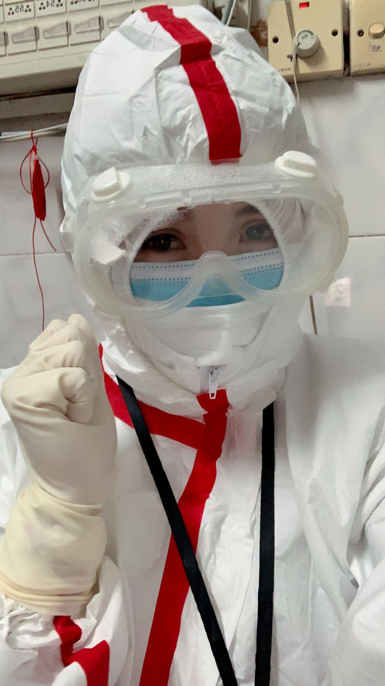
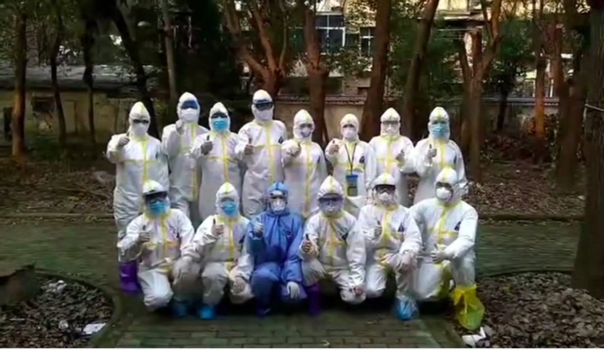
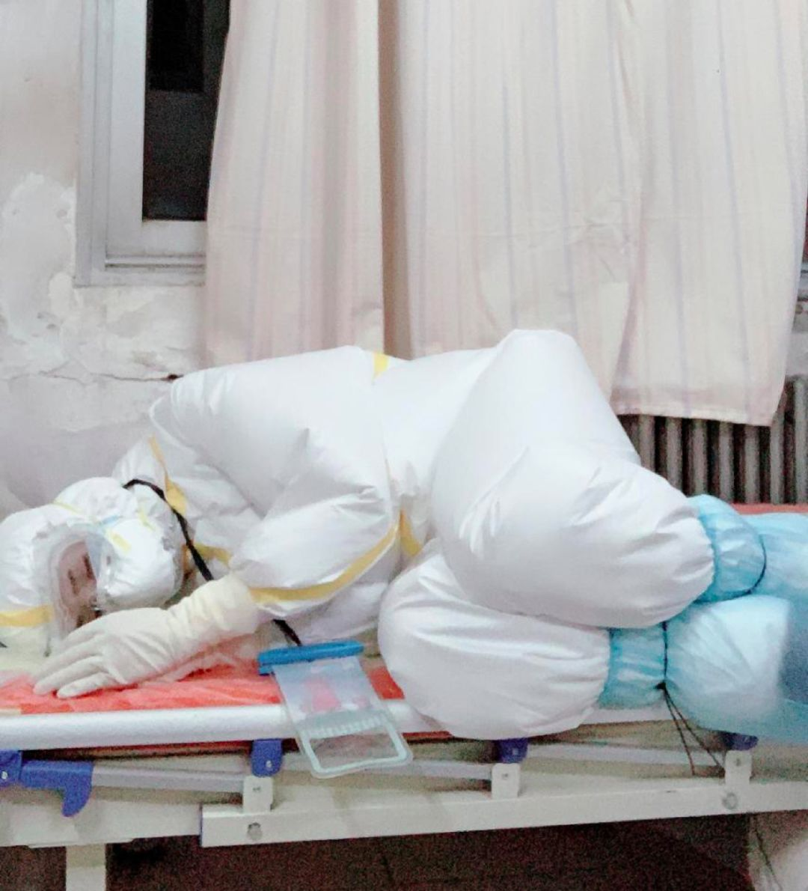

金银潭医院的昼与夜
原文链接 备份链接 从第一例患者入院，金银潭医院已超负荷运转近两个月。医生、护士、病人、志愿者，都在为新冠病毒不眠不休，昼夜奋争。绝望和希望、晦暗和明朗、苦涩和感动，也交织纵横，罩住整座江城。 全文7410字，阅读约需14分钟 点击下图 …
有人说我们这样的医护是志愿者，不是“国家队”。但这个我们不在乎。我在这里的同事，一个原来是自己开诊所、把诊所停业跑来支援的医生说：“我既然来了就是把生死置之度外了。”我没有去想他说的那么大的问题，我只想能尽到自己的职责，为救治病人帮忙。我想，这忙应该是帮上了吧。
口述：李瑞瑞
整理：王 煜
2月19日，高铁列车从南京南站开出，我的愿望终于要实现了：这趟车将把我带往武汉！在车上我才发消息告诉家人这件事儿，他们很着急：“这时候你怎么要去武汉啊？！”我回答：“我要去帮助救治病人！”

李瑞瑞在支援武汉的岗位上
其实，在春节前疫情刚暴发时，我就特别想能去武汉帮忙。我是一名护士，但是在民营医院工作，通过单位安排去支援武汉的机会比较小。也曾想过先去了武汉再说，可那段时间一直买不到过去的车票，我就先当起了线上志愿者。
在线上志愿者的组织里，小伙伴们搜集微博、微信等各种渠道的求助信息，比如武汉等地有患者就医困难、有老人小孩没人照顾等等，联系当事人核实后，再帮助他们联系医院、政府、媒体等机构，尽力帮他们解决问题。常常为了落实帮助方案、联系各个单位，我也要忙到凌晨两三点甚至要通宵工作。
可我还是一直想去武汉，因为我毕竟是个护士，希望能把我的专业技能贡献到一线。我从新闻上看到那边是很缺医护人员的，我想去了一定能帮上忙。至于感染的风险，这个我真没怎么考虑过。可能因为我是个要强的人吧，想做的事儿就一定要想办法做到。
终于，我在一个群里看到消息，说武昌区委组织部委托一家健康管理公司，在招募具有资质的医护人员支援当地医院抗击新冠肺炎。我赶紧报了名，后来入选了，我特别高兴。
我们支援的是武汉市第七医院，这是当地的一家收治发热病人的定点医院，其中一个病区由我们这群来自天南海北的医护志愿者队伍接管。我们这个团队有十几个人，有和我一样是民营医院的医护人员，也有自己开诊所的医生。我和他们之前都不认识，但一到医院都马上投入工作成为同事。

李瑞瑞和同事们在武汉市第七医院的合影
我们这个病区收治的是轻症的发热病人，其中有新冠肺炎的确诊患者。我做的是些繁杂琐事，比如给病人配药、发药、发饭，给病区消毒，给病人量体温、血压、血糖、血氧，给他们抽血、取咽拭子；然后尽量解答病人的疑问，满足他们的需求。比如有病人会说：“我想做个核酸检测，能不能帮我申请一下？”有人会问：“护士，上次我的检查结果怎么还没出来呀？”有的就是问我再要个口罩。有几天，好几个病人对医院安排的伙食吃不惯，想吃方便面。我就去跟后勤的同事说，最后弄来了泡面。有几个病人早餐想吃馒头包子，我也去想办法解决。
这每件事都不算难，但我们一个班一般只安排一名医生和一名护士，我要同时应对的是三十几名病人，只要病人有事儿轮流喊我，加上我自己要完成的任务，八九个小时里几乎没有空闲。只有每次给病人发好饭，他们统一在吃饭的时候，我可能有十分钟能完整地歇一会儿。

李瑞瑞（右）和同事的合照
来之前我知道在武汉的病房要穿上全套的防护装备，也知道穿着那些会不舒服，但没有过多去想；我之前的护理岗位也没穿过这些。我觉得所有困难都会被我打败，但现实比我想象的还是要难许多。
在防护服里很快就会全身汗透，然后蒸发干，接着再汗透、再干，八九个小时，整个身体时不时要泡在汗里。下班回到酒店，我第一件事就是一口气喝完一瓶矿泉水，然后冲进淋浴间洗澡，我觉得自己实在是又脏又臭，沐浴露、洗发水、护发素至少要用上三遍心里才觉得舒服点。

平时生活中的李瑞瑞
长时间戴着口罩和护目镜，脱掉之后，我脸上像是被爪子抓过一样，横七竖八全是压痕。我平时算是个挺爱漂亮的人，现在每次下班后都不敢看镜子里自己的脸。不光看上去吓人，被压的地方还特别疼。压痕只有靠自己揉一揉，睡觉前敷点面膜来缓解。在这边已经十多天了，我们护士自己带来的面膜都快用完了，住我隔壁的女同事跑来问我借牙膏，说要涂在脸上看能不能缓解下疼痛。
我在自己本职的医院工作时，很不愿意上夜班；但到了这里，夜班是肯定要上的。“大夜班”是从晚上12点开始到第二天早上8点，不过到了早上5点左右，我就要给需要做检测的病人抽血和取咽拭子了，常常取着样，就到了天亮。

值夜班时，稍有一小会儿空闲，李瑞瑞打个盹儿
穿着隔离服上班的整段时间不能吃喝，开始工作的前几天我到了饭点时真是饿得特别难受，但后来慢慢习惯了。其实，不光是工作时候不能吃喝，为了避免那段时间上厕所，我在每天自己轮班开始时间点前的5个小时就开始不吃东西了，这样有时一天就只能吃上一顿饭。
其实，再难都是我自己愿意来的，没有任何人要求我、号召我。而且我能做这些，真的很开心。我觉得其他的志愿者是真的很辛苦，比如开车接送我们上下班的志愿者司机师傅，有时我下班时快凌晨一点了，他还是等着我，把我送到住处。
前几天，我在给病区消毒时，一位病人跟我说：“瑞瑞，你怎么那么勤快啊。”我说：“想让你们能早点出院啊。”这两天也陆续会有人出院了，看到他们笑着跟我道别，那是我最高兴的时候，觉得自己即使24小时上班都没问题，都是值得的。

李瑞瑞为病人比心加油
有人说我们这样的医护是志愿者，不是“国家队”。但这个我们不在乎。我在这里的同事，一个原来是自己开诊所、把诊所停业跑来支援的医生说：“我既然来了就是把生死置之度外了。”我没有去想他说的那么大的问题，我只想能尽到自己的职责，为救治病人帮忙。我想，这忙应该是帮上了吧。
图片均由李瑞瑞提供


征集令
阳春三月，万物复苏。在抗击疫情的战斗中，我们迎来了春天，《新民周刊》也迎来了新闻线索和故事征集的第二弹。
如今，经历了一个多月休眠的城市正在逐渐苏醒，各行各业都开始有序复工复产。
不论您是企业老板、管理者，还是普通员工；又或者，您是老师、家长，还是学生本人……我们希望了解复工复产复学过程中的困难，或暖心故事。
如果你是抗疫一线的医生护士，疫情期间拍下了珍贵的摄影作品，也欢迎联系我们投稿。
当然，抗击新冠肺炎疫情的相关故事，我们仍然欢迎。
希望广大读者朋友，提供相关线索，说出你的故事，让我们用新闻留存这一切。
《新民周刊》新冠肺炎线索征集值班编辑联系方式（添加时请简要自我介绍）：
周一：应 琛 微信号：paulineying0127
周二：金 姬 微信号：gepetta
周三：黄 祺 微信号：shewen-2020
周四：周 洁 微信号：asyouasyou
周五：孔冰欣 微信号：kbx875055141
周六：吴 雪 微信号：shyshine1105
周日：姜浩峰 微信号：jianggeladandong
✳如你需要捐赠物资，可与以下两位工作人员联系:王勇：WangYong-SH 吴轶君：rommy150708（添加时请注明“捐物资”，方便工作人员快速通过您的申请，谢谢。）
新闻是历史的底稿，你们是历史的见证者。期待你的故事、你的线索！

▼
大家还都在看这些
▼
新民周刊所有平台稿件， 未经正式授权
一律不得转载、出版、改编或进行
与新民周刊版权相关的其他行为，违者必究


原文链接 备份链接 从第一例患者入院，金银潭医院已超负荷运转近两个月。医生、护士、病人、志愿者，都在为新冠病毒不眠不休，昼夜奋争。绝望和希望、晦暗和明朗、苦涩和感动，也交织纵横，罩住整座江城。 全文7410字，阅读约需14分钟 点击下图 …
原文链接 备份链接 文/六筒 李岩半年前刚去过武汉，和家人去旅游，主要想看看黄鹤楼。那还是夏天，热气蒸得人头上冒烟。高温挡不住蜂拥的游客，摩肩接踵，拥塞的车辆在大道上艰难挪动。“真是个大都市”，她想。 李岩是河北医科大学第二医院呼吸与危重 …
原文链接 备份链接 早春的武汉春风拂面，这两天接到爸妈打来的电话，询问我的近况。我告诉他们我过得好着呢：吃着大餐、住着五星级的酒店。其实，我特别想念妈妈蒸的馒头，就算只就着大蒜，我也能吃两个碗大的馍馍。 口述 | 毛 平 整理 | 沈 …
原文链接 备份链接 - 疫 情 之 下 - 如今，针对医护人员的出行难，政府已出台各种措施，但还是有个别的需求难以得到满足。高宇说，他会一直坚持到医护人员交通困难问题缓解的那一天。 ” 2020年1月23日，武汉市新型冠状病毒感染的肺炎疫 …
原文链接 备份链接 🎧 点击上方图片，跳转「故事FM」小程序，收听真人讲述。记得添加「我的小程序」，一键收听全部故事哟！ 在这次疫情期间，故事FM 采访过武汉的医生、方舱医院的确诊者、还有武汉的癌症患者……，我们试图通过武汉各种群体的故 …